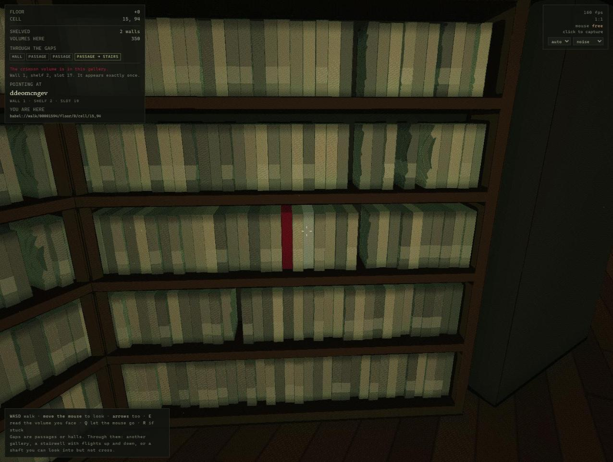

The Library of Babel
A world an agent can be tested against, where a claim about it
is true or false as arithmetic.
Borges's Library, built and walkable. Nothing is stored: every
room and every symbol is a pure function of its address, so the renderer, the
command line, the test suite and an agent all compute the same Library from the
same coordinates — and a citation into it can be checked exactly, by
nobody's opinion.

Walk it
-
The Library, from inside →
WASD to walk, mouse to look, E to read the volume you are facing,
? for the keys. Every book on every shelf can be pulled and read.
-
The Library, from outside →
The cluster around a cell as low-poly solids — six cells in every
direction, six storeys either way. It draws the void rather than the rock,
so what you see is the shape of the network.
The first load takes about a minute and a half on some
machines. The fragment shader is large and the driver has to compile it; the
browser caches the result, so every load after the first opens at once. The page
says so while it waits, and stays responsive.
Check it
-
A recorded conformance run →
The lattice is written twice — once in JavaScript, once in GLSL —
and the GLSL is a port, not a copy. This is the two being compared, 704
integers at a time, under two different GPU backends.
-
… or run it yourself →
The same harness, live, on whatever GPU you are reading this with.
Use it without the renderer
git clone https://github.com/davidreyburn/library-of-babel
cd library-of-babel
node tools/babel.mjs here -3,0 # if this prints a gallery, you are ready
Node 18 or newer, no dependencies at all. The one rule the
environment cares about:
node tools/babel.mjs verify <address> <page> <line> <col> "<quote>"
# exits 0 if those symbols really are at that coordinate, 2 if they are not
There is no judge model in that loop, and nothing in it to trust.
A reader that invents a quotation is caught by arithmetic.
Read about it
- The repository →
Specifications, a bug log weighted toward what went wrong, a case study,
and a roadmap that says what is still open.